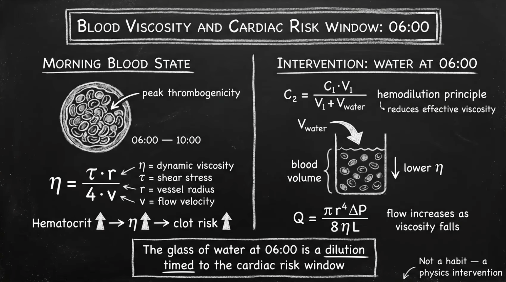
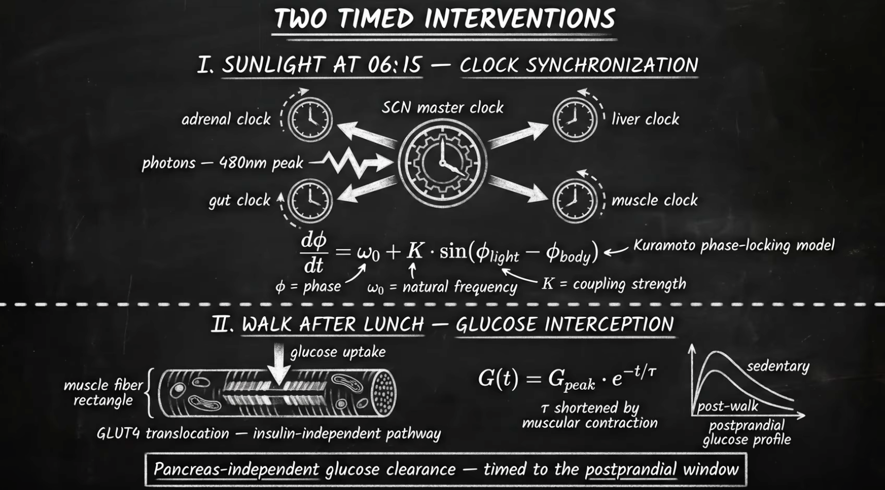
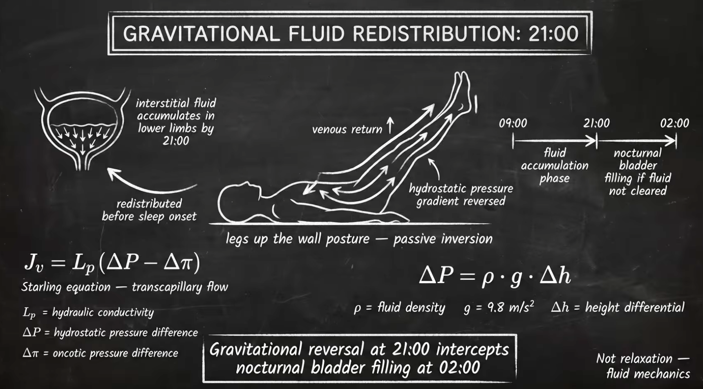

Your body runs on physics, not willpower. Every organ has its own circadian clock — your pancreas, liver, heart, and brain all operate on a 24-hour cycle synced to light, food, and movement. This schedule is based on circadian biology research, the work of Dr. Andrew Huberman, Dr. Satchin Panda, and the physics of how your body processes light, water, and nutrients at each hour.
The Assembly Problem — 4 interventions timed by physicsThe Feynman Way
Key Insight: Water before coffee isn't a "hack" — it's dilution of thrombogenic blood. Your blood viscosity peaks after 6–8 hours of dehydration during sleep. Timing is not preference — it's physics.
🕐
Hour-by-Hour Protocol
6:00 – 6:30 AM — Wake
No phone for 30–60 min. Drink 16–32 oz warm water with a pinch of Himalayan salt. Do a 5-second physiological sigh (double nasal inhale → long mouth exhale). This is your nervous system reset.
Why: After 6–8 hours without water, blood viscosity is at its highest. Heart attack incidence peaks in early morning hours. Hydrating immediately dilutes blood and supports kidney function. The salt provides trace minerals and helps cellular absorption.

Blood Viscosity & Cardiac Risk — Not a habit, a physics interventionThe Feynman Way
6:15 – 6:45 AM — Sunlight
Get 10–15 min direct sunlight — eyes and skin, no sunglasses. Gaze at the horizon. Hum for 60 seconds (15× nitric oxide boost). Nose breathe throughout.
Why: Sunlight activates melanopsin receptors → suprachiasmatic nucleus → cortisol pulse (energy) + melatonin calibration (sleep tonight). UVB converts 7-dehydrocholesterol into Vitamin D3. Near-infrared stimulates mitochondrial cytochrome c oxidase, boosting ATP. 90 sec of morning red-spectrum light restores retinal mitochondria.
6:30 – 7:00 AM — Ground & Move
Ground barefoot 10–15 min. Walk backwards 5 min for knee rehab. One-leg balance 10–30 sec each side. Dance 60 sec to any music. Light movement — no intense exercise yet.
Why: Earth's electrons neutralize free radicals (reduced blood viscosity, lower inflammation, improved HRV). Backward walking activates the cerebellum and strengthens the VMO (quad stabilizer). Dancing activates more brain regions than any other exercise. One-leg balance for 10 sec predicts all-cause mortality risk.
7:00 AM — Breakfast (If Not Fasting)
Eat within 1–2 hours of waking. High protein + healthy fats. This is when your pancreatic insulin sensitivity is at its peak. Your body processes carbohydrates 20–30% more efficiently in the morning than evening.
Why: The first meal signals your peripheral clocks (liver, gut, pancreas) that it's daytime. Eating early "entrains" your circadian rhythm via food — a powerful Zeitgeber. Your pancreas produces the most insulin in the morning, making glucose handling most efficient now. Skipping breakfast keeps the body in cortisol-driven stress mode.
8:00 AM — First Coffee (90 min after waking)
Wait 90+ min after waking for caffeine. Bulletproof coffee + MCT oil if desired. No sugar. Skip caffeine 1–2 days/week to prevent tolerance.
Why: Cortisol naturally peaks 30–45 min after waking. Caffeine during this peak blunts the natural cortisol curve, causing an afternoon crash. Waiting lets adenosine clear naturally. Huberman protocol: coffee at 90 min maximizes the caffeine window without disrupting the cortisol rhythm.
8:00 AM – 12:00 PM — Peak Focus
Most cognitively demanding work here. Work in 45-min focused blocks with 5–10 min movement breaks. Nose breathe (5.5 sec in, 5.5 sec out). Look at the horizon every 20 min of screen time. Stand or use a standing desk.
Why: The prefrontal cortex depletes glucose and neurotransmitters after ~45 min of sustained focus. Productivity drops 50% after 52 min without a break. Sitting beyond 45 min compresses spinal discs, pools blood, and suppresses lymphatic flow. Horizon gazing relaxes the ciliary muscles locked from near-focus screen work.

Two Timed Interventions — Sunlight (clock sync) & Post-Meal Walk (glucose interception)The Feynman Way
12:00 – 12:30 PM — Lunch (Largest Meal)
Eat your biggest meal now. Insulin sensitivity is still high. Include protein, healthy fats, cooked vegetables. This meal should be your largest by caloric volume.
Why: Digestive enzyme production, bile release, and gut motility all peak around midday. The same meal eaten at noon produces a 20–30% lower glucose response than the same meal at 8 PM. Front-loading calories aligns with your metabolic peak.
12:30 – 1:00 PM — Post-Meal Walk
Walk 10–20 min immediately after eating. Never sit after meals. Even standing helps. Outdoors preferred for combined sunlight + movement benefits.
Why: A 10-min walk immediately after eating is more effective at controlling glucose than a 30-min walk done 30 min later. Blood sugar spikes 30–50% higher when you sit post-meal. Walking activates GLUT4 transporters in muscles, pulling glucose from blood without insulin. This is the single easiest metabolic intervention.
1:30 – 2:00 PM — The Nap Window
20–30 min nap if needed (set alarm — don't exceed 30 min). This is the natural circadian dip in alertness. If no nap, do 10 min of Non-Sleep Deep Rest (NSDR).
Why: The post-lunch dip is a real circadian phenomenon, not just food coma. Adenosine (the sleepiness molecule) accumulates through the morning. A 20-min nap clears enough adenosine for 2–3 more hours of productive focus. Napping beyond 30 min enters deep sleep, causing grogginess (sleep inertia).
2:00 – 5:00 PM — Exercise Window
Peak physical performance. Body temperature peaks, reaction time is fastest, muscle strength is highest. Strength training, VO2 max cardio, or active movement. Cold shower after (30–60 sec minimum).
Why: Core body temperature peaks in the afternoon, improving muscle elasticity and reducing injury risk. Lung function is 6% better than morning. Testosterone and cortisol ratios optimize for muscle building. Synovial fluid is most warmed and viscous, protecting joints. Cold exposure post-workout boosts dopamine 200–300% for 2–3 hours.
3:00 PM — Hydration Shift
Reduce caffeine entirely by now. Switch to herbal tea, water with LMNT, or hydrogen water. Begin tapering stimulation.
Why: Caffeine has a half-life of 5–6 hours. Coffee at 3 PM means 50% of the caffeine is still active at 9 PM, reducing deep sleep by up to 20%. Even if you "fall asleep fine," caffeine disrupts sleep architecture — you lose the restorative stages where gut repair, HGH release, and immune recovery occur.
6:00 – 7:00 PM — Dinner (Light)
Smaller, lighter meal. Protein + fat + cooked vegetables. Finish eating 3+ hours before bed. Chamomile or ginger tea after.
Why: Insulin sensitivity drops 50% by evening. Late eating disrupts the liver's overnight repair cycle (1–3 AM). Digestion during sleep compresses the stomach (especially when lying down), increasing acid reflux and disrupting sleep architecture. Your liver needs the fasting window overnight to detoxify.
8:00 PM — Wind Down
Last meal complete. Begin dimming lights. Put on blue-light glasses or switch to warm lighting. Step outside — view the night sky for the awe response.
Why: Darkness triggers melatonin release from the pineal gland. Blue light suppresses melatonin by up to 50%. The night sky triggers a measurable "awe response" — the vagus nerve activates, pro-inflammatory cytokines (IL-6) decrease, and the stress circuitry downregulates. This is more effective than happiness or amusement at reducing inflammation.
9:00 PM — Screens Off
No screens. Read a physical book 20–30 min. Prayer or meditation 10–15 min. 4-7-8 breathing. Magnesium glycinate if using. Legs up the wall 5–10 min for circulation.
Why: Reading reduces stress 68% in 6 minutes and builds cognitive reserve against age-related decline. Complete darkness after 9 PM regenerates retinal rhodopsin (the visual pigment consumed during daytime). Legs up the wall reverses gravitational pooling, reducing leg swelling and improving venous return.

Gravitational Fluid Redistribution — Not relaxation, fluid mechanicsThe Feynman Way
9:30 – 10:00 PM — Sleep
Bedtime. Room 65–68°F. Blackout curtains. Left side sleeping. Body pillow between knees for spinal alignment. Nose breathe (mouth tape if needed). If waking at 3 AM: physiological sigh, don't check phone.
Why: Left-side sleeping assists stomach emptying (pylorus points right), reduces acid reflux, and improves lymphatic drainage. Cool temperature (65–68°F) activates brown fat all night. 75% of daily growth hormone is released during deep sleep. Mouth taping ensures nasal breathing, which produces nitric oxide — a vasodilator that improves oxygen absorption 10–15%.
Fasting is one of the most powerful tools for cellular repair, inflammation control, and metabolic reset. Your body was designed for periods without food — it's when deep healing occurs.
Quarterly: 36–48 hr. Annually: 72 hr (both with medical supervision).
📊
Log This Fast
🔬
Fasting Milestones — What Happens Inside
8 Hours — Autophagy Begins
Your body begins recycling broken cellular components. Insulin drops, signaling fat stores to release energy. The metabolic switch from glucose to fat begins.
Autophagy is cellular clean-up — damaged proteins and organelles are dismantled and recycled for building materials.
12 Hours — Ketone Production Starts
Glycogen depletes. Liver converts fatty acids to beta-hydroxybutyrate. Improved focus, reduced brain fog, stable energy without food.
The brain shifts to ketone fuel — a cleaner energy source that produces fewer reactive oxygen species than glucose.
Allowed: Water + LMNT electrolytes, black coffee (no sugar), herbal tea
Light movement only — no intense exercise past 24 hrs
Measure glucose/ketones if available
Breaking the Fast
First: ½ avocado + MCT oil, kimchi, almonds, or bone broth
Wait 30–60 min, then eat a full healthy meal
Don't overeat — your stomach has shrunk
⚠️
Fasting Cautions
Electrolyte Depletion: Past 16 hrs without electrolytes risks cramps, headaches, palpitations. Use LMNT packets. Break fast immediately if dizzy or experiencing irregular heartbeat.
Medication Timing: If on medications, consult your doctor about adjustments for fasts over 24 hours. Never skip medications for a fast.
Blood Sugar: If you experience shakiness, confusion, or excessive sweating, break your fast immediately with a small amount of food.
General Rule: Stick to 16–24 hr fasts regularly. Reserve 36+ hr fasts for confirmed stable health periods. Hydrate 3+ L/day. Track symptoms in a journal.
Plate Ratio: ½ greens · ¼ protein · ¼ fat · minimal carb
🍽️
Sample Day — Non-Fasting
7:30 AM — Breakfast
Scrambled Eggs & Avocado
3 scrambled eggs (1 tbsp ghee), ½ avocado, 1 cup sautéed spinach, 1 tbsp sauerkraut, 1 oz almonds
P: 27gC: 11gF: 45g~570 cal
12:00 PM — Lunch
Turkey on Sourdough
4–6 oz pasture-raised turkey, 2 slices sourdough, avocado mayo, spinach, 1 tbsp sauerkraut. Side: 1 cup bone broth.
P: 38gC: 32gF: 22g~480 cal
3:00 PM — Snack
Cottage Cheese & Blueberries
½ cup full-fat cottage cheese, ¼ cup blueberries, 1 oz almonds
P: 18gC: 14gF: 14g~250 cal
6:00 PM — Dinner
Wild-Caught Salmon & Asparagus
6 oz wild salmon, 1 cup steamed asparagus (1 tbsp grass-fed butter), 1 tbsp kimchi, 1 cup bone broth
P: 42gC: 10gF: 55g~710 cal
📊
Log Meal / Snack
💊
Daily Supplement Protocol
Core supplements timed for optimal absorption and synergy. All supplements should be spaced appropriately and taken with or without food as indicated.
🕐
Daily Timing
6:15 AM
Probiotic (Primal Defense Ultra) — empty stomach, first thing. Establishes gut flora before any food or supplements.
7:30 AM
With Breakfast: Garden of Life Whole Body Vitamin · Omega-3 Fish Oil (1,000–2,000 mg EPA/DHA) · CuraMed Curcumin or Turmeric drink mix. Fat-soluble vitamins need dietary fat for absorption.
12:30 PM
With Lunch: Additional Omega-3 if splitting dose. Collagen peptides in bone broth. Fat-soluble vitamins (A, D, E) if part of protocol.
5:00 PM
Post-Workout (M/W/F): Momentous Protein Powder (20–30 g) · Momentous Creatine (5 g) · LMNT Electrolytes. Creatine timing is flexible — consistency matters more than timing.
9:00 PM
Before Bed: Magnesium Glycinate (if on cleanse protocol). Calms the nervous system, supports deep sleep, and aids muscle recovery.
🧹
Cleanse Supplements
Short-term use during specific cleanse periods only.
Black WalnutOil of OreganoBerberineMilk ThistleMagnesiumVit AVit D3Vit EL-GlutamineCollagenZincCoQ10
Cleanse Day Timing
6:30 AM
Black Walnut + Oregano (parasite). 2–3 hrs from Probiotic.
10 AM
Zinc, CoQ10 with snack — 2 hrs after multi.
12:30
Berberine, Collagen, L-Glutamine, Vit A/D3/E with fat.
Safety Notes: Probiotic vs. antimicrobials: 2–3 hrs apart. Mineral competition: Magnesium 2–3 hrs from Zinc. Fat-soluble vitamins (A, D, E): take with fat, don't exceed doses. Berberine: lowers blood sugar — take with meals. L-Glutamine: start 2.5 g → 5–10 g.
📊
Log Supplements
🌙
Sleep Protocol
Target 7–9 hours nightly. Consistency supports circadian rhythm, gut repair, and inflammation control. Sleep is when 75% of daily growth hormone is released.
🕐
Evening Sequence
8:00 PM
Last meal. Chamomile or ginger tea. Begin winding down.
9:00 PM
No screens. 4-7-8 breathing, journaling, reading physical book. Magnesium if on cleanse.
10:00 PM
Bedtime. 65–68°F. Blackout curtains. Left side sleeping. Body pillow between knees.
6:30 AM
Wake. Sunlight within 30 min. Warm water + Himalayan salt. No phone for 30–60 min.
💡
Why Sleep Matters
Inflammation: Sleep reduces pro-inflammatory cytokines — critical for autoimmune management
Gut repair: Deep sleep supports mucosal healing and intestinal lining regeneration